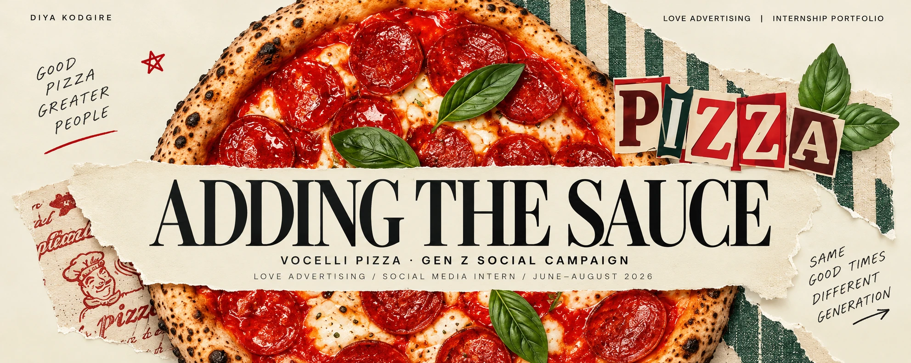
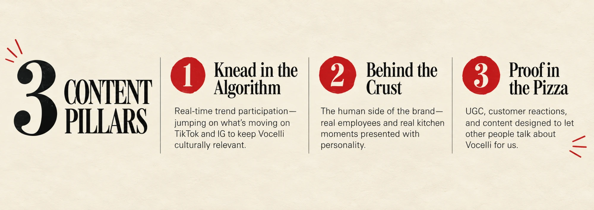
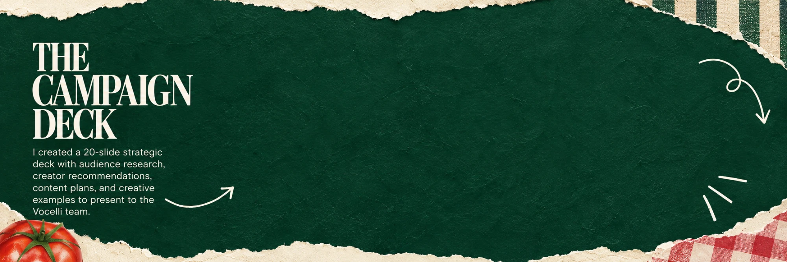
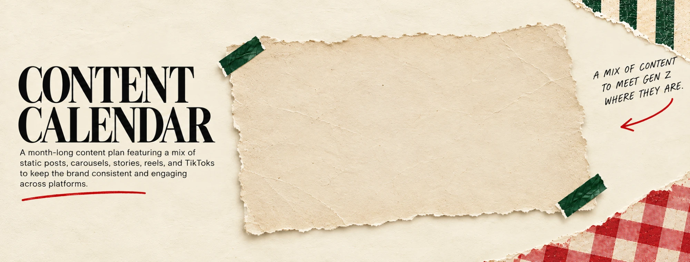
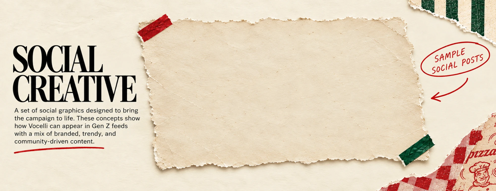
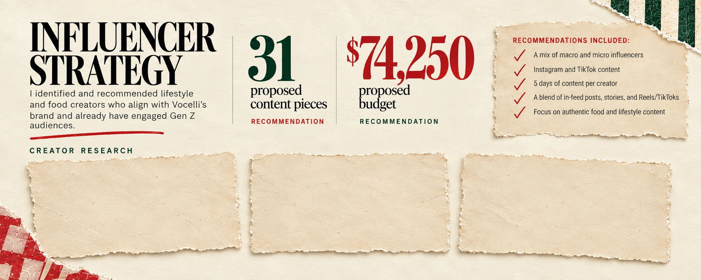
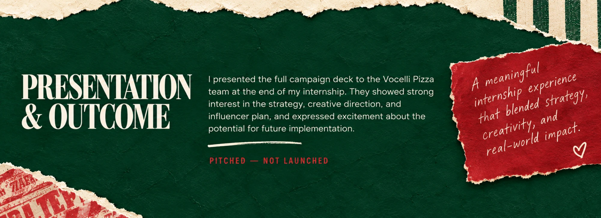

Adding the Sauce — Vocelli Pizza, Gen Z Social Campaign. Love Advertising, Social Media Intern, June–August 2026.

The Brief and Research
The Brief: A proposed social campaign designed to make Vocelli recognizable, engaging, and chosen by Gen Z. As a Social Media Intern at Love Advertising, I developed a full Gen Z social media campaign for Vocelli Pizza, from research and strategy to content, creator recommendations, and a client presentation deck. Proposed campaign — not launched.
Research: Gen Z craves relevant food content. 73% use social media platforms to explore food. 70% identify TikTok as most valuable for food recommendations. 68% reported watching short videos for more than 1 hour a day. 16.3% cite social media as their main influence. 4 seconds: since 2023, attention span has decreased to this. Sources: Tastewise, Attest, Food & Beverage, 20Something, IJMSSSR.
![The Brief: A proposed social campaign designed to make Vocelli recognizable, engaging, and chosen by Gen Z. As a Social Media Intern at Love Advertising, I developed a full Gen Z social media campaign for Vocelli Pizza, from research and strategy to content, creator recommendations, and a client presentation deck. Proposed campaign — not launched. Research: Gen Z craves relevant food content. 73% use social media platforms to explore food. 70% identify TikTok as most valuable for food recs. 68% reported watching short videos for more than 1 hr a day. 16.3% cite social media as their main influence. 4 secs: since 2023, attention span has decreased to this. Sources: Tastewise, Attest, Food & Beverage, 20Something, IJMSSSR.](../assets/images/projects/vocelli/sections/brief-research.png)
3 Content Pillars
1. Knead in the Algorithm — Real-time trend participation—jumping on what's moving on TikTok and IG to keep Vocelli culturally relevant. 2. Behind the Crust — The human side of the brand—real employees and real kitchen moments presented with personality. 3. Proof in the Pizza — UGC, customer reactions, and content designed to let other people talk about Vocelli for us.

The Campaign Deck
I created a 20-slide strategic deck with audience research, creator recommendations, content plans, and creative examples to present to the Vocelli team. Four slides shown: Adding the Sauce (title slide), Influencers to target, goal, and Strategic Recommendations. Select a slide to view it enlarged.

Content Calendar
A month-long content plan featuring a mix of static posts, carousels, stories, reels, and TikToks to keep the brand consistent and engaging across platforms. A mix of content to meet Gen Z where they are. Select the calendar to view it enlarged.

Social Creative
A set of social graphics designed to bring the campaign to life. These concepts show how Vocelli can appear in Gen Z feeds with a mix of branded, trendy, and community-driven content. Sample social posts. Select the slide to view it enlarged.

Influencer Strategy
I identified and recommended lifestyle and food creators who align with Vocelli's brand and already have engaged Gen Z audiences. 31 proposed content pieces — recommendation. $74,250 proposed budget — recommendation. Recommendations included: a mix of macro and micro influencers; Instagram and TikTok content; 5 days of content per creator; a blend of in-feed posts, stories, and Reels/TikToks; focus on authentic food and lifestyle content. Creator research: three real screenshots of candidate creator profiles considered during research. Select a sheet to view it enlarged.

Presentation & Outcome
I presented the full campaign deck to the Vocelli Pizza team at the end of my internship. They showed strong interest in the strategy, creative direction, and influencer plan, and expressed excitement about the potential for future implementation. Pitched — not launched. A meaningful internship experience that blended strategy, creativity, and real-world impact.
